APUA is hosted by Azienda Agricola Pian della Chiesa, a small farm that produces wine, olive oil, fruit, and honey using organic methods. It is also a place of hospitality, cultural exchange, and experimentation: a project in constant evolution that aspires to preserve and share the natural and cultural landscape in which it is set.
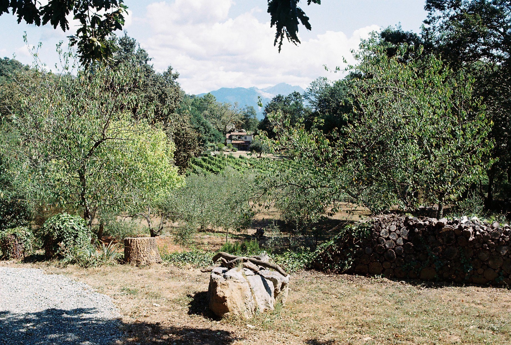Overlooking the Gulf of La Spezia in eastern Liguria, Pian della Chiesa is located in the hills of the Montemarcello-Magra Natural Park. This protected area is characterised by Mediterranean shrubs, forests of Aleppo pines, oak trees, and freshwater springs, geologic karst formations, crossed by trails that once connected orchards, olive groves, and vineyards to the small villages of Tellaro, Montemarcello, and Ameglia. Further on lies the port town of Lerici, with its medieval castle, and across the gulf stands the outline of Porto Venere and the islands of Palmaria, Tino, and Tinetto.
On the opposite side of the gulf, past the Montemarcello Natural Park, lies the Lunigiana valley, where the town of Sarzana stands with its medieval fortresses. Following the Magra River upstream and further inland, the cultivated valley and stone villages give way to the rugged peaks of the Apuan Alps, with chestnut forests and the Carrara marble quarries that have shaped the mountain landscape for centuries.
This area holds a layered history. It was once home to the ancient Apuan tribes settled here since the Bronze Age. Scattered across the landscape, they left behind elusive and enigmatic steles, and tombs. Later came the Romans, who settled in the valleys, followed by many other civilisations, scars from the wars, and the rise of a rusty shipbuilding industry, each leaving traces of their presence in the land.

 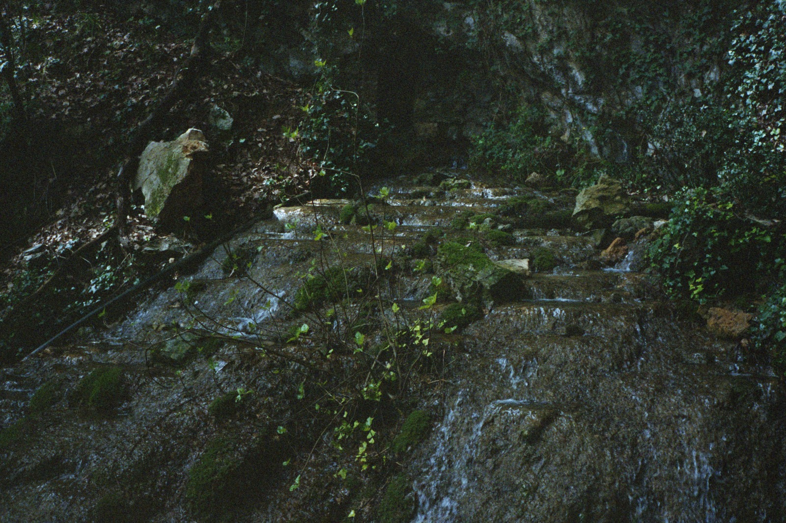
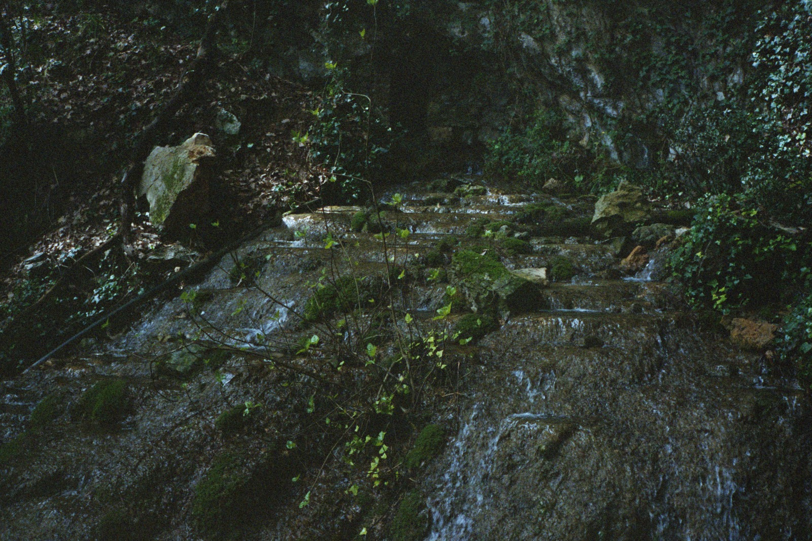


 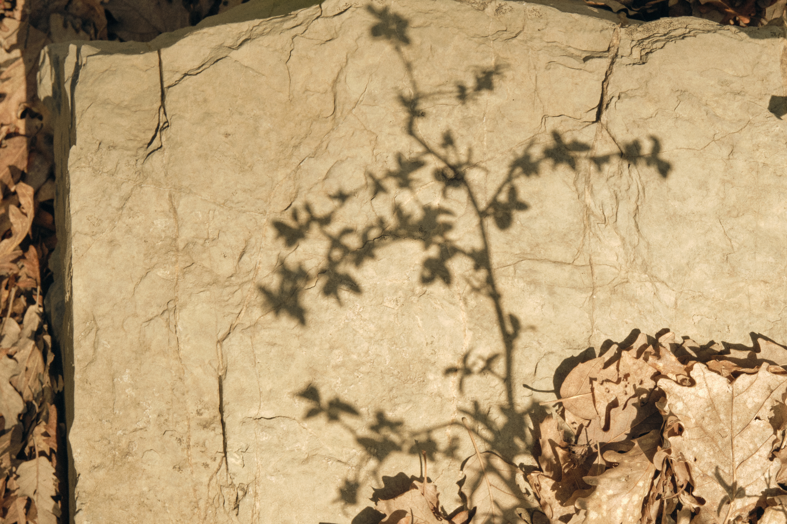
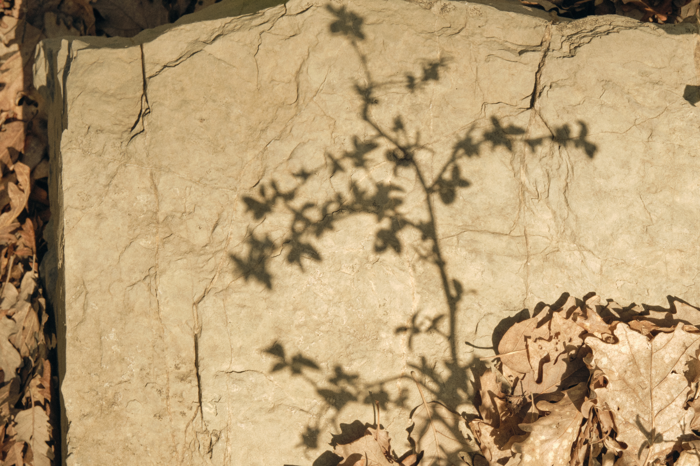

 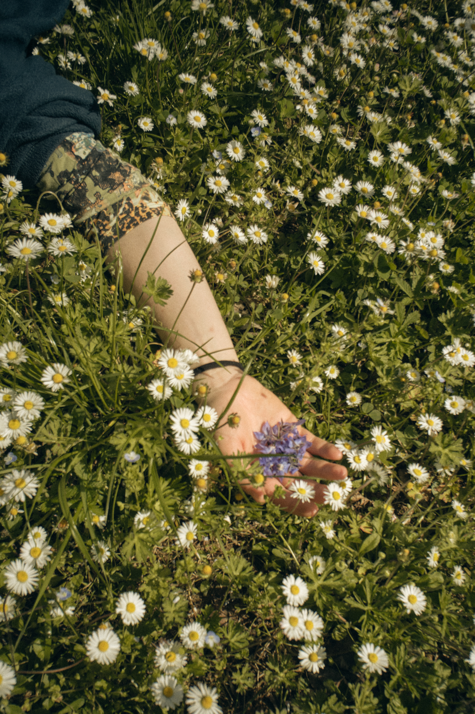
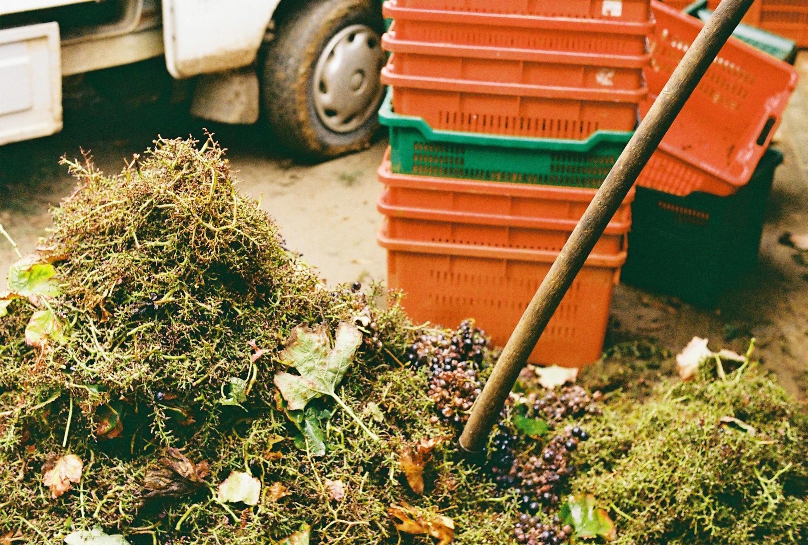
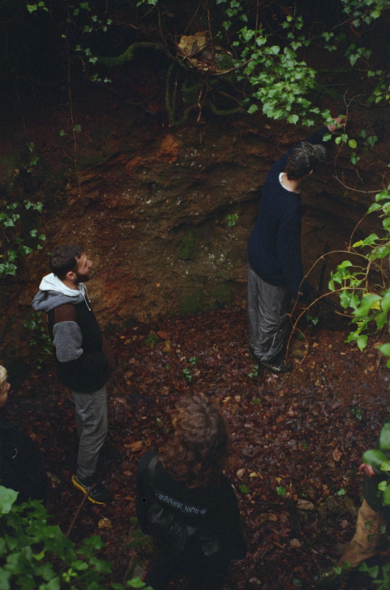
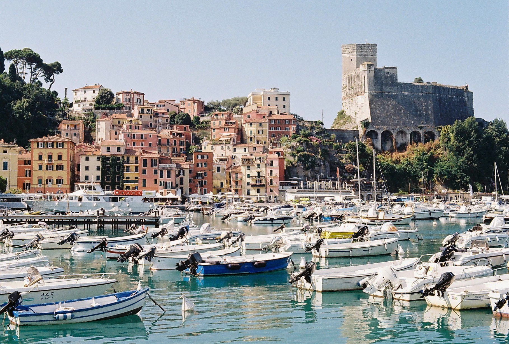
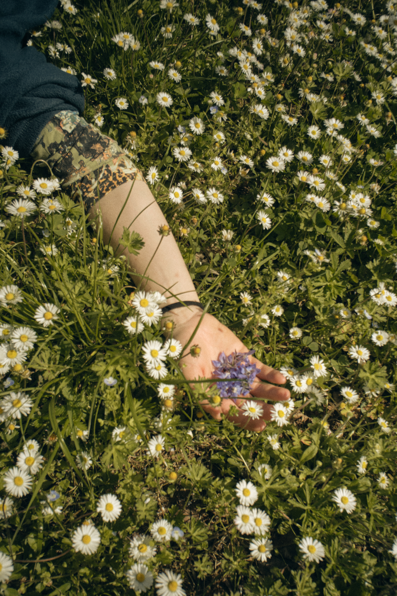
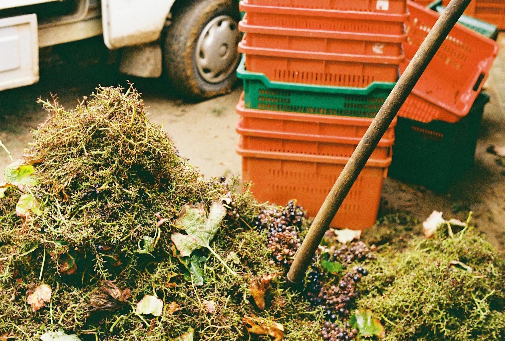
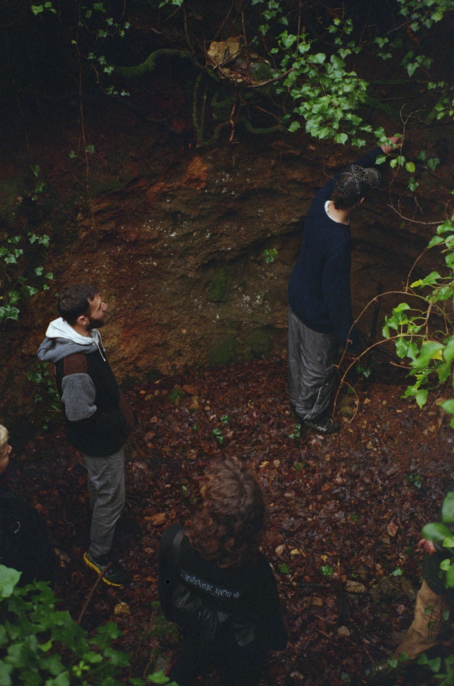
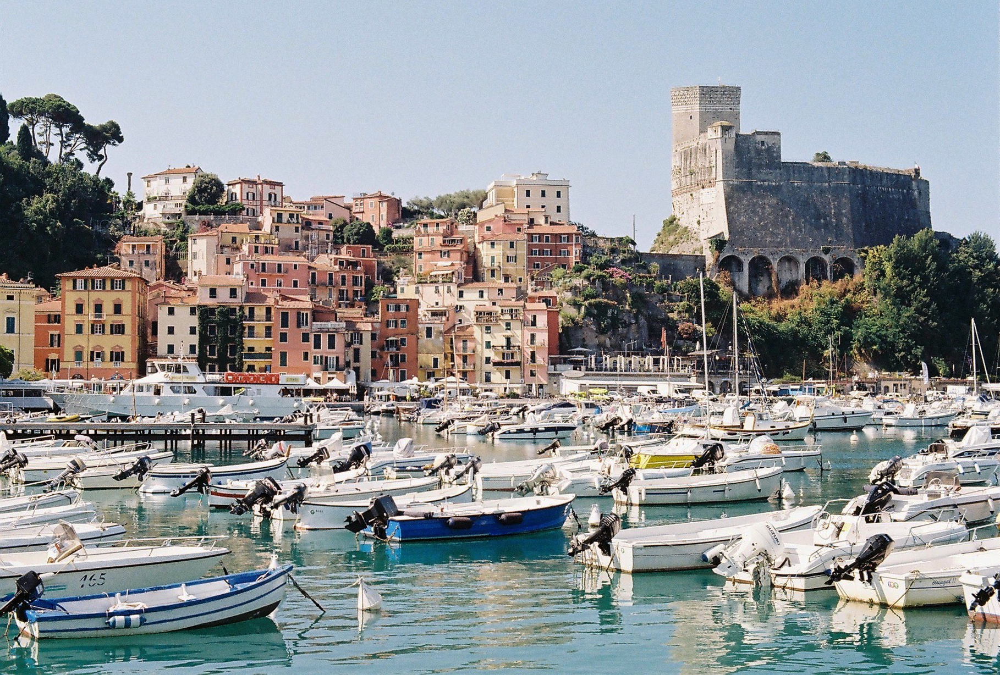